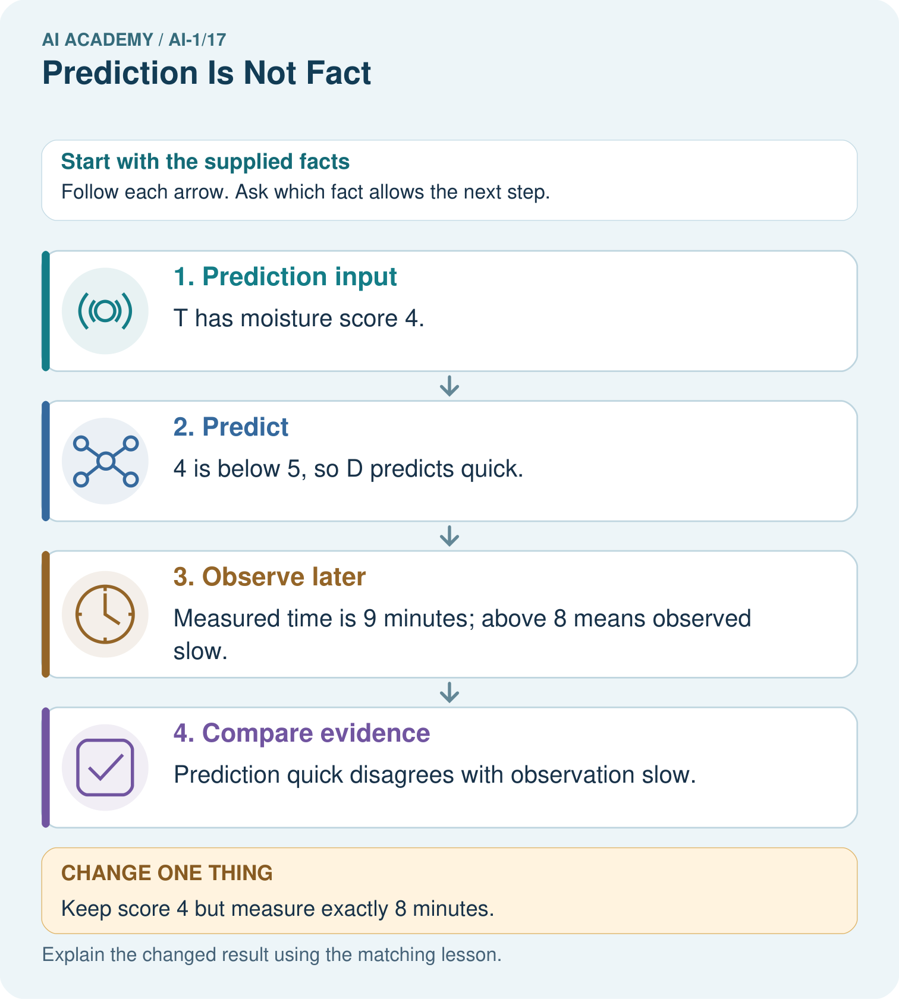
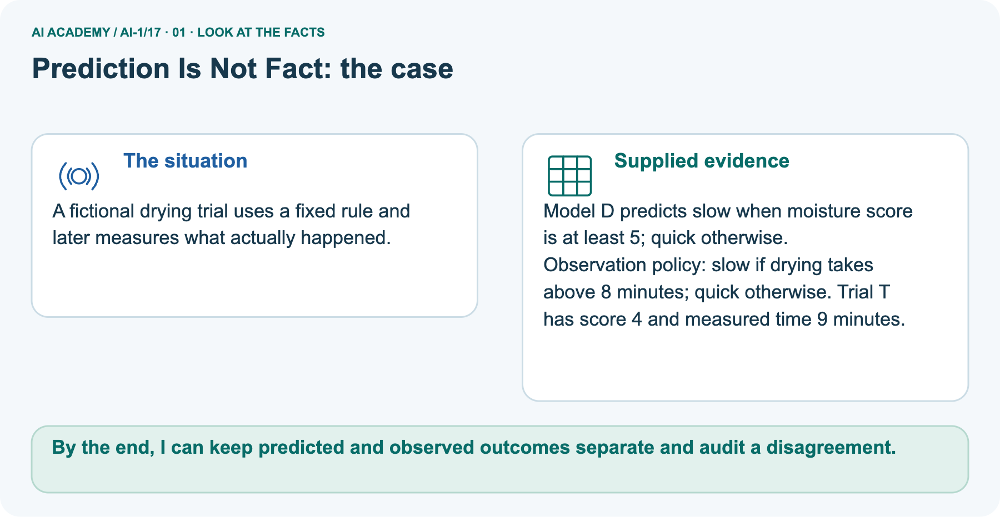
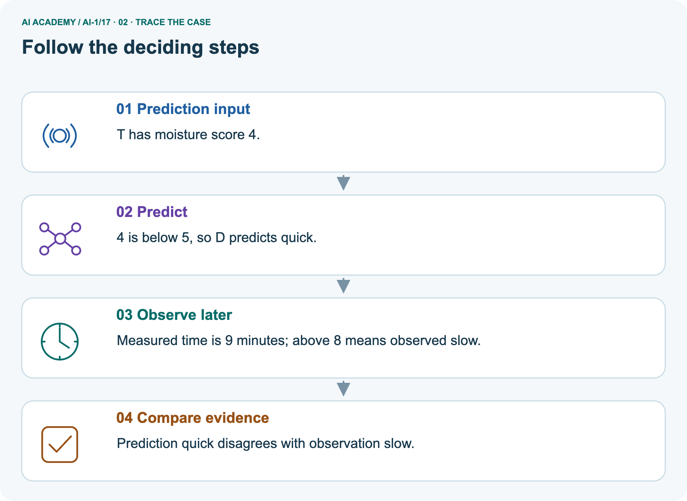
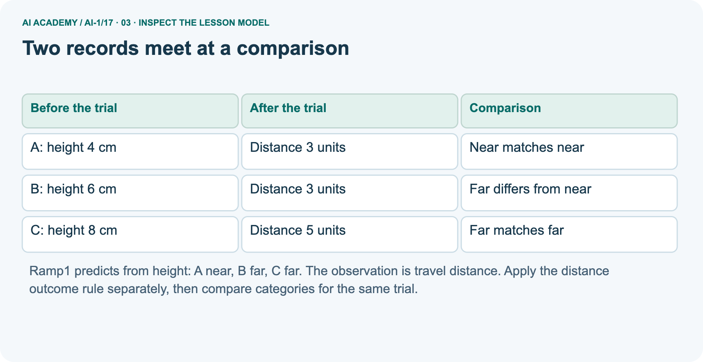
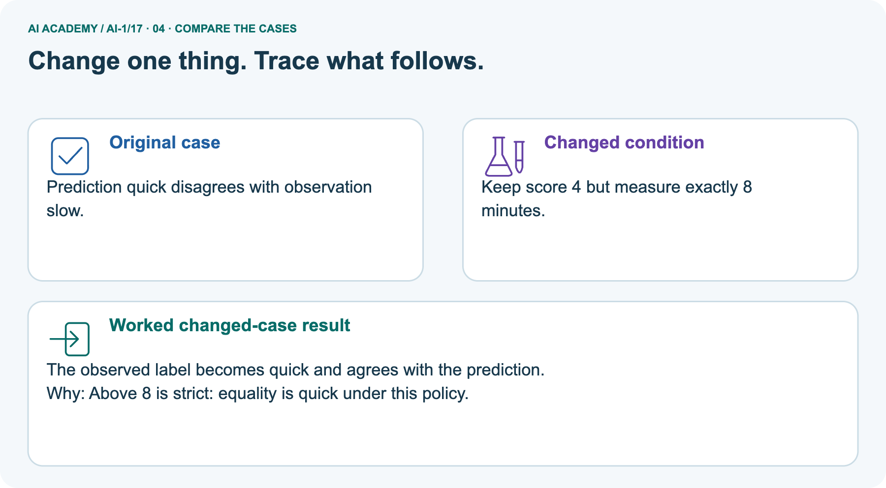
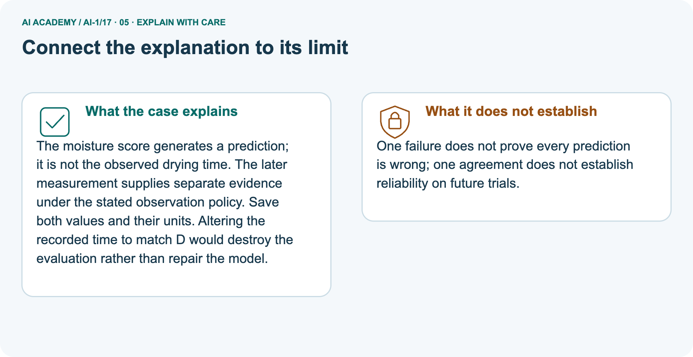
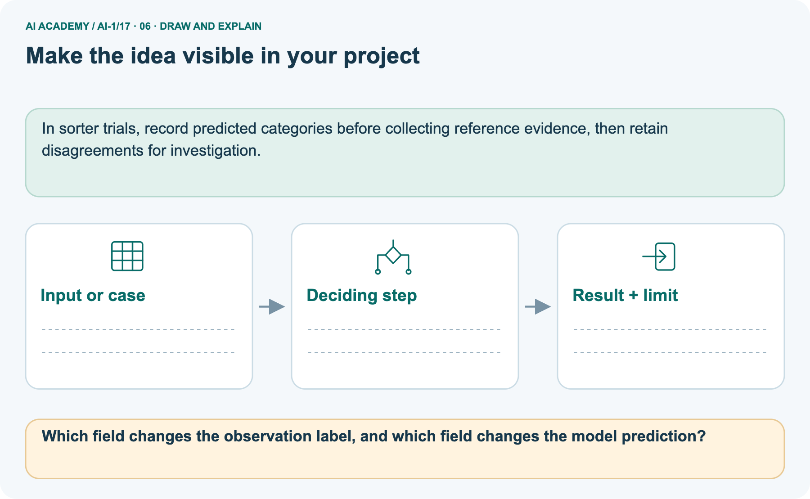

AI Academy · Level 1 · Grade 6 · Week 17 · Workbook
Prediction Is Not Fact
Learn to understand, design, build, test and explain AI systems responsibly.
Project: Helpful Classroom Sorter
Workbook · 1 of 21
Recall and choose your starting point
Record your starting explanation for Prediction Is Not Fact before opening notes. Show any later correction separately.
Try the recall before opening notes. Then use a different colour or a labelled second line to correct your explanation.
Boundaries and 'Not Sure'
Without opening the old lesson, explain one key idea from Boundaries and 'Not Sure'. Give an example and a mistake that the idea helps you avoid.
Build a Human Classifier
Without opening the old lesson, explain one key idea from Build a Human Classifier. Give an example and a mistake that the idea helps you avoid.
Repeating Efficiently
Without opening the old lesson, explain one key idea from Repeating Efficiently. Give an example and a mistake that the idea helps you avoid.
Workbook · 2 of 21
Practise with fading help
Complete the supported Prediction Is Not Fact trace and record the first step you can explain without help.
Use W2: Check a boundary without changing the rule for Predictions and observations. Record the answer once; the lesson and workbook refer to the same attempt.
| Given inputs | Procedure I chose | Middle steps | Result and check |
|---|---|---|---|
Workbook · 3 of 21
Individual reasoning check
Check the proposed Prediction Is Not Fact explanation against the supplied facts before discussing it.
Use the worked case for Predictions and observations. Proposed explanation: “Running the rule correctly proves the prediction correct”. Decide whether this explanation is supported.
Point to the step or supplied fact that decides; explain your repair if needed.
Workbook · 4 of 21
Independent transfer case
Write one first attempt at the reserved independent case before feedback. Repeated copies of that case refer to the same recorded attempt.
Independent case: Transfer the check to drying predictions
In a fictional paper test, Dry1 predicts slow for a moisture score of at least 7, quick otherwise. Allowed scores are whole numbers 1 through 10.
The observed outcome is slow if drying time is greater than 10 minutes, quick otherwise. Records are P: score 6, time 12; Q: score 7, time 10; R: score 9, time 14; S: score 5, time missing.
Record all predictions, observed categories and comparison statuses. Summarise matches out of assessed cases, name the unassessed count, and limit the conclusion.
Attempt this case before feedback. Record any help. Earlier examples below are further practice; a case already practised with feedback cannot establish fresh transfer.
Workbook · 5 of 21
Your learning target
Connect the Prediction Is Not Fact target to a trace and a justified conclusion.
On Monday a team predicts 'rain on Tuesday'. On Tuesday they count a damp playground as success, although sprinklers ran. Write an observation rule that could have been agreed before Tuesday.
Workbook · 6 of 21
Solve the given case
Solve the supplied Prediction Is Not Fact case and show the deciding evidence.
A weather helper predicts tomorrow's rain.
Is this a fact about tomorrow? How can it be checked?
Show your trace, calculation or evidence
Workbook · 7 of 21
Check a changed case
Apply the procedure to the changed case and record why the conclusion follows.
A model predicts rain tomorrow. Tomorrow is dry. Was the prediction an observation of tomorrow? Explain what new evidence settles the result.
My independent answer and reason
Week 17 Test and reflect
Workbook · 8 of 21
Design a revealing test
Specify a changed input, expected result and observation separately.
Create a changed input, boundary case or missing-information case. Write the expected answer or safe response before testing.
| Test record | My evidence |
|---|---|
| Changed input or condition | |
| Expected answer or fallback | |
| Observed result | |
| Why the result occurred |
Workbook · 9 of 21
Project checkpoint
Justify what Prediction Is Not Fact adds to Helpful Classroom Sorter and keep the evidence.
Label the sorter's suggested bin as a prediction until a human confirms the final placement.
The project change and evidence I will keep
Workbook · 10 of 21
Self check
Judge explanation, evidence, transfer and limits separately; attach the work behind your judgement.
- I can explain the mechanism.
- I can show evidence.
- I can handle a changed case.
- I can name a limit.
Mark each as not yet, with help or independently, and attach supporting work.
Teacher review ____________________ Next step ____________________
Workbook · 11 of 21
Transfer practice from the original programme
Use this earlier case as transfer practice. A case already discussed with feedback is not fresh assessment evidence.
On Monday a team predicts 'rain on Tuesday'. On Tuesday they count a damp playground as success, although sprinklers ran. Write an observation rule that could have been agreed before Tuesday.
Record support used: none, hint or teacher explanation.
Workbook · 12 of 21
W1 Separate inputs from observed outcomes
Separate inputs from observed outcomes. Apply the supplied Prediction Is Not Fact facts and keep your reasoning.
For Ramp1 trial B, height is 6 cm and the later travel distance is 3 units. State the input, prediction, observation, observed category and comparison status.
Explain why the prediction rule and outcome rule use different measurements.
Workbook · 13 of 21
W2 Check a boundary without changing the rule
Check a boundary without changing the rule. Apply the supplied Prediction Is Not Fact facts and keep your reasoning.
Trial F has height 6 cm and verified travel distance exactly 4 units. Apply Ramp1 and the outcome rule. A partner says exactly 4 is near because far means greater than 4. Use the stated rule to resolve the disagreement.
Workbook · 14 of 21
W3 Keep incomplete evidence visible
Keep incomplete evidence visible. Apply the supplied Prediction Is Not Fact facts and keep your reasoning.
D predicts near but has no distance record. E predicts far but its two distance records say 3 and 4 units.
State each comparison status, request useful evidence, and explain why neither guessing nor a new trial can establish the old trial’s outcome.
Workbook · 15 of 21
W4 Transfer the check to drying predictions
Attempt before feedback. If this repeats the selected independent case, reuse that first attempt; otherwise keep a separate record. Transfer the check to drying predictions. Apply the supplied Prediction Is Not Fact facts and keep your reasoning.
In a fictional paper test, Dry1 predicts slow for a moisture score of at least 7, quick otherwise. Allowed scores are whole numbers 1 through 10.
The observed outcome is slow if drying time is greater than 10 minutes, quick otherwise. Records are P: score 6, time 12; Q: score 7, time 10; R: score 9, time 14; S: score 5, time missing.
Record all predictions, observed categories and comparison statuses. Summarise matches out of assessed cases, name the unassessed count, and limit the conclusion.
Workbook · 16 of 21
W5 Correct a report without erasing evidence
Correct a report without erasing evidence. Apply the supplied Prediction Is Not Fact facts and keep your reasoning.
After seeing B’s observed near category, a learner replaces Ramp1’s far prediction with near. They call the new entry a corrected observation and report a perfect result for A through C.
Explain the two record-keeping errors and write a defensible replacement report.
Workbook · 17 of 21
Feedback, return check and learning record
Record the first repaired step and a different case to revisit after a delay.
| Evidence | My record |
|---|---|
| Worked alone / hint / model | |
| First step I repaired and why | |
| New case checked later; date and result | |
| What I can now explain without notes | |
| One remaining question |
Revisit this idea with your teacher after a delay. Familiarity is different from explaining and using it on a changed case.
Workbook · 18 of 21
Pictorial case practice: Prediction Is Not Fact
A fictional drying trial uses a fixed rule and later measures what actually happened. Explain the labelled step before checking the changed condition.
A fictional drying trial uses a fixed rule and later measures what actually happened.
Model D predicts slow when moisture score is at least 5; quick otherwise.
Observation policy: slow if drying takes above 8 minutes; quick otherwise. Trial T has score 4 and measured time 9 minutes.

Which field changes the observation label, and which field changes the model prediction?
Record the help used
Support used: alone / hint / worked example. This record is practice evidence.
Project connection: In sorter trials, record predicted categories before collecting reference evidence, then retain disagreements for investigation.
Workbook · 19 of 21
Project portfolio milestone
Keep this week’s input, deciding step, result and limit together in the Helpful Classroom Sorter record.
Project: Helpful Classroom Sorter
Current milestone: Test changed cases. Keep normal, boundary and failure cases; compare expected and observed results.
In sorter trials, record predicted categories before collecting reference evidence, then retain disagreements for investigation.
| Evidence to keep | My record |
|---|---|
| This week’s input and deciding step | |
| Prediction and actual result (or labelled paper trace) | |
| One change since the previous checkpoint and why | |
| One error or limit and the next test |
Workbook · 20 of 21
Supported practice and learning evidence
Try the supported questions before comparing with hints and feedback. Record what you repaired and the evidence you retained.
Use this supported practice once, in the browser or on paper. Keep the reserved independent assessment for a separate first attempt before teacher feedback.
A fictional drying trial uses a fixed rule and later measures what actually happened.
Practice 1: explain the deciding evidence
Which labelled step matches this detail? Prediction quick disagrees with observation slow.
1. Predict
2. Compare evidence
3. Observe later
4. Prediction input
Hint · try first
Hint if needed: Read the steps in the pictorial case. Match the supplied detail to the stage that performs or records it.
Feedback · compare after trying
After your attempt, compare with the supported explanation: Compare evidence Prediction quick disagrees with observation slow. The moisture score generates a prediction; it is not the observed drying time.
The later measurement supplies separate evidence under the stated observation policy. Save both values and their units. Altering the recorded time to match D would destroy the evaluation rather than repair the model.
Practice 2: explain the deciding evidence
Changed case · predict first
Changed-case practice: Keep score 4 but measure exactly 8 minutes. Which conclusion is supported by the supplied facts?
1. The observed label becomes quick and agrees with the prediction.
2. We can decide the result without examining the changed input or the procedure.
3. This one example guarantees correct results for every future input.
Hint · try first
Hint if needed: Use the changed condition and the deciding step in the pictorial trace. The answer must say what follows from those facts.
Feedback · compare after trying
After your attempt, compare with the supported explanation: The observed label becomes quick and agrees with the prediction. Above 8 is strict: equality is quick under this policy.
Repair a missing building block
Review Boundaries and 'Not Sure' (ai-1/16). Goal: Identify a specific source of uncertainty and explain how it affects a prediction. Short practice: Which original block needs a better width before accepting or rejecting it?
What should the reviewer do?. Return to this week and explain what you changed.
Review Build a Human Classifier (ai-1/14). Goal: Construct a classifier with a stated input format, selected rule and recorded output.
Short practice: Trace 0 cm and explain why clarification is different from predicting short.. Return to this week and explain what you changed.
Review Repeating Efficiently (ai-1/11). Goal: Trace a loop by testing its condition before every repetition. Short practice: Trace a fresh start of 9. How many additions occur, and must the report equal 10?.
Return to this week and explain what you changed.
Keep your completed work
Use Download completed work in the hosted lesson to export your answers, reflections, practice feedback and code-run evidence. Open the HTML copy to read or print it.
Drafts stay in this browser when storage is available; clear drafts on a shared device.
Workbook · 21 of 21
Visual concept journey
Explain each Prediction Is Not Fact picture from its labels, then record a relevant limit.
01. Prediction Is Not Fact: the case

A fictional drying trial uses a fixed rule and later measures what actually happened. Supplied facts: Model D predicts slow when moisture score is at least 5; quick otherwise.
Observation policy: slow if drying takes above 8 minutes; quick otherwise. Trial T has score 4 and measured time 9 minutes.
Point to the given fact that matters most. Explain why it matters.
02. Follow the deciding steps

Prediction input: T has moisture score 4. → Predict: 4 is below 5, so D predicts quick. → Observe later: Measured time is 9 minutes; above 8 means observed slow. → Compare evidence: Prediction quick disagrees with observation slow.
Point to each numbered stage and explain which recorded input it uses.
03. Two records meet at a comparison

Two records meet at a comparison. A: height 4 cm | Distance 3 units | Near matches near. B: height 6 cm | Distance 3 units | Far differs from near. C: height 8 cm | Distance 5 units | Far matches far
Read the labels and values. Explain the relationship the model shows.
04. Change one thing. Trace what follows.

Original case: Prediction quick disagrees with observation slow. Changed condition: Keep score 4 but measure exactly 8 minutes. Expected result: The observed label becomes quick and agrees with the prediction.
Reason: Above 8 is strict: equality is quick under this policy.
Predict before checking the worked changed-case result. Name what changed and what the supplied facts allow you to conclude.
05. Connect the explanation to its limit

The moisture score generates a prediction; it is not the observed drying time. The later measurement supplies separate evidence under the stated observation policy. Save both values and their units.
Altering the recorded time to match D would destroy the evaluation rather than repair the model. Limit: One failure does not prove every prediction is wrong; one agreement does not establish reliability on future trials.
Explain the case, then point to a limit on the claim.
06. Make the idea visible in your project

In sorter trials, record predicted categories before collecting reference evidence, then retain disagreements for investigation. Draw your input, deciding step, result and limit.
Supported question: Which field changes the observation label, and which field changes the model prediction?
Draw your project trace and justify the deciding step using evidence.